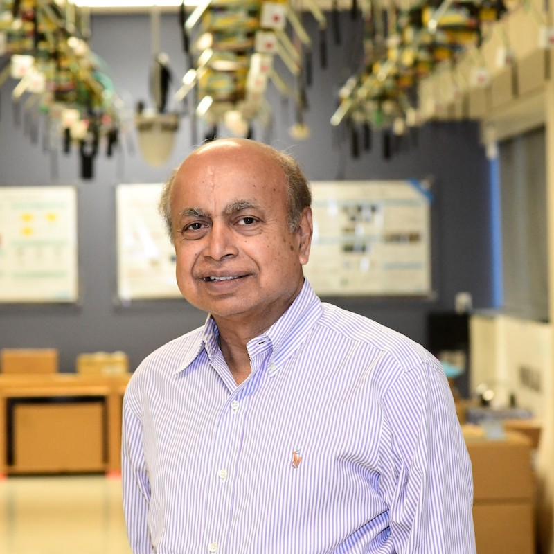

Yingying Chen
Lead PI
Rutgers University
Electrical & Computer Engineering
yingying.chen@rutgers.eduPersonal website ↗
Rutgers University & Temple University
Our project brings together researchers from Rutgers University and Temple University. Please contact the principal investigators below for project inquiries.
Lead PI
Rutgers University
Electrical & Computer Engineering
yingying.chen@rutgers.edu
Co-PI
Rutgers University
Electrical & Computer Engineering
ray@winlab.rutgers.eduCo-PI
Rutgers University
Electrical & Computer Engineering
bo.yuan@soe.rutgers.eduPI
Temple University
Computer & Information Sciences
y.wang@temple.edu


Supported by the National Science Foundation · Awards 2548782 and 2548783